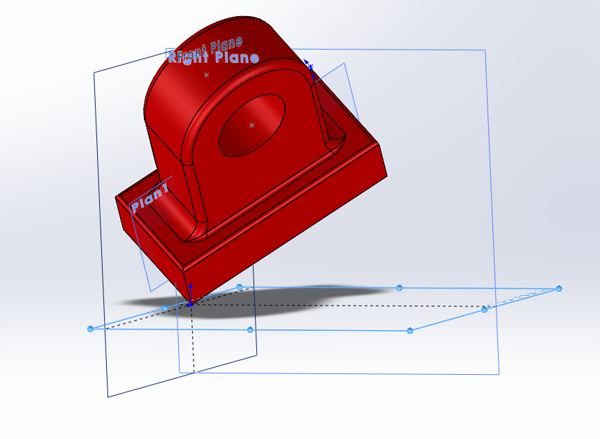
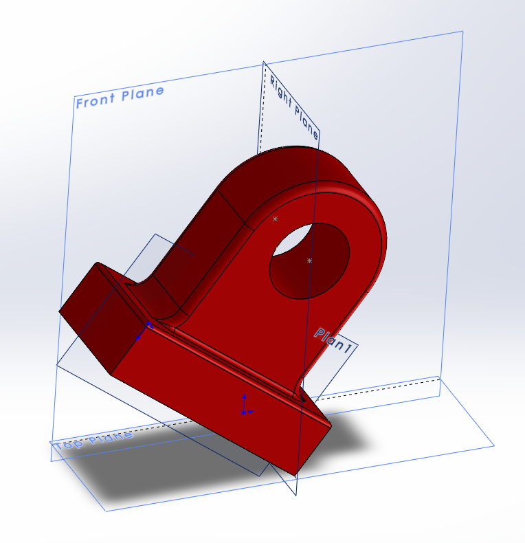
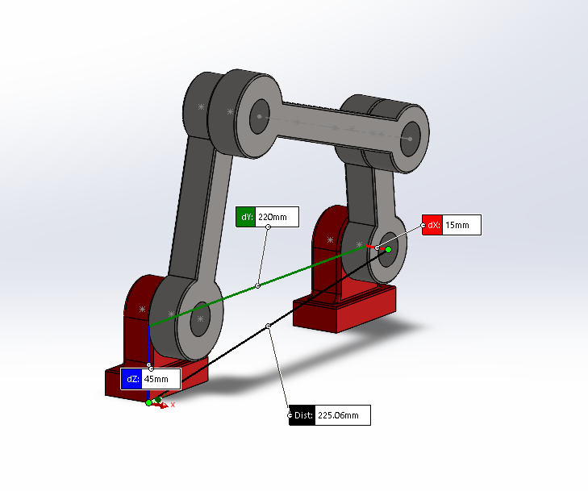
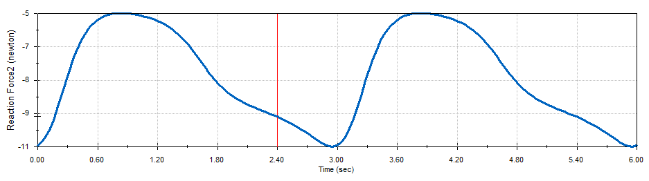
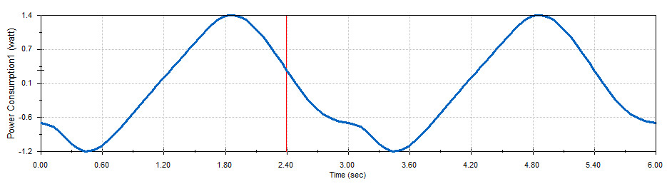

Based on the instructions for this challenge, I knew that I had to apply the principles for mechanism synthesis we learned in class.
I first copied all the relevant dimensions for the trash can and the start and end positions of the tray.
I knew that I had to apply a midpoint constraint to define the motion of the path of my tray. At first, I struggled to figure out the orientation of this midpoint constraint.
My mistake was that I couldn't figure out how to place the midpoint so that the pivots of the links stayed inside the trashcan area.
But I figured out that the pivots on the tray segment didnt have to be at the endpoints, which solved this issue. I placed one pivot on the center of the tray.
As Prof. mentioned in class, the symmetry of the problem only allows one valid line on which the constrain tray can be defined (45 degree tilt).
After all the constrints were set, I figured out the locations for the pivots on the inside of the trashcan by constructing perpendicular bisectors between the points of motion of the tray.
This allows me to find the center of curvature for the points of motion of the tray, which I use to place the pivot points for the links.
I then remove the perpendicular bisectors and fix all the lengths and pivots for the links. I also style the other tray constraints to be dashed lines to show that the tray will move along that path.
Here is the final video showcasing the motion of the tray.
4 Bar Mechanism Solidworks
This project tested the degree of freedom principles we learned in class. I think i found a better way to constrain the 5 components in the assembly to achieve full control over the degrees of freedom in my system so that the final motion has only 1 DOF exactly. Here is my process.
Since there are 5 components, there will be a total of 30 DOF initially.
Each time we constrain the bearings, we need to remove exactly 6 DOF.
I first constrain one corner of the bearing to the origin (-3 DOF).

Then I constrain another corner to an axis (-2 DOF).

Finally, I constrain a third point to the top plane (-1 DOF).
Total (-6 DOF).
>
For the second bearing. I create a distance constraint between the bearings. This acts like a parrallel plane to plane constrains (-2 DOF).
Then I constrain one corner to be colinear with the edges of the other bearing (-2 DOF).
And repeat again for another corner. (-2 DOF)
Total (-6 DOF).
This means that now the remaining 3 links of my assembly have 18 DOF.
I need to find a way to leave only 1 DOF in the end.
I need to first make 3 angular joints. I do this by constraining the cylindrical surfaces to be concentric (-4 DOF).
And then mate the point of rotation on one link to be coincident to the plane of the other (-1 DOF). Total(-5 DOF per Joint).
I use a simple point to line.
We do the same thing for the next 3 joints until we get to the last joint which connects to the other bearing. Here we will have only 3 DOF remaining (our target is 1). We cannot use a concentric joint to mate the inner sleeves of the joints (-4 DOF), but we can use a point to line (-2 DOF).
Now we add a motor with fixed RPM and continue with the rest of the instructions to plot and collect all relevant data.
Max value of the motor Torque: 664.3 N*mm
The angle for which the motor torque is maximum is 106.5 degrees from the positive x direction

Maximum vertical force on NewBearing: 12.17 N
Maximum vertical force on Bearing: -10.76 N

to find the minimum motor power required to move the crank, we need to realize that we must be able to power the maximum required power point on the plot. Thus the max is: 1.39 W

The negative motor torque values mean that at those points, the motor is driven by the linkage.